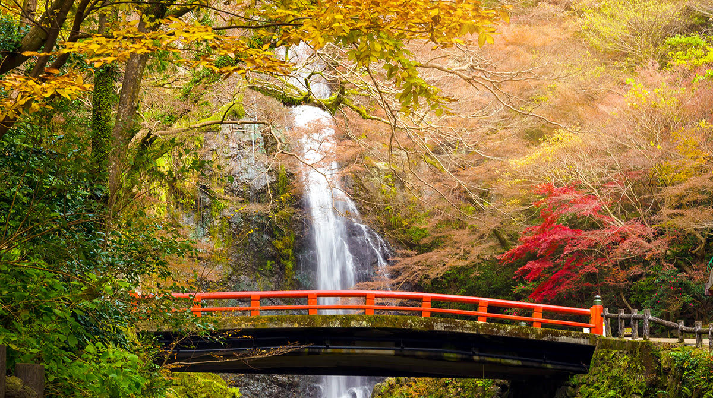

Kiotóban két napot töltöttünk. 1997 decemberében itt határozták el a szén-dioxid és egyéb üvegházhatású gázok kibocsátásával foglalkozó egyezmény létrehozását, ami később Kiotói jegyzőkönyv néven vált ismertté.

|
Kóbeban három napot töltöttünk. Kóbe milliós kikötőváros, többek közt itt található az ASICS és a Kawasaki cégek központja.

|
 |
Oszakában két napot töltöttünk. A gyakran Japán második legnagyobb városának nevezett Oszaka a történelem folyamán az ország kereskedelmi centruma volt.
Gyakran a „nemzet konyhája” és a „Japán gasztronómiai fővárosa” nevekkel illetik.